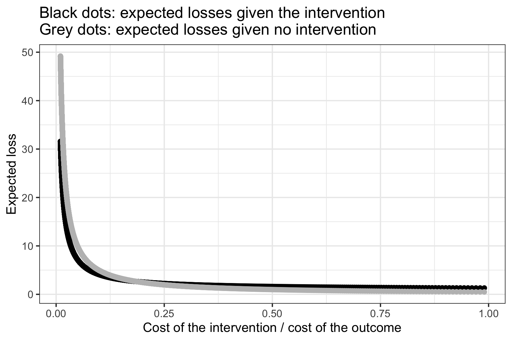
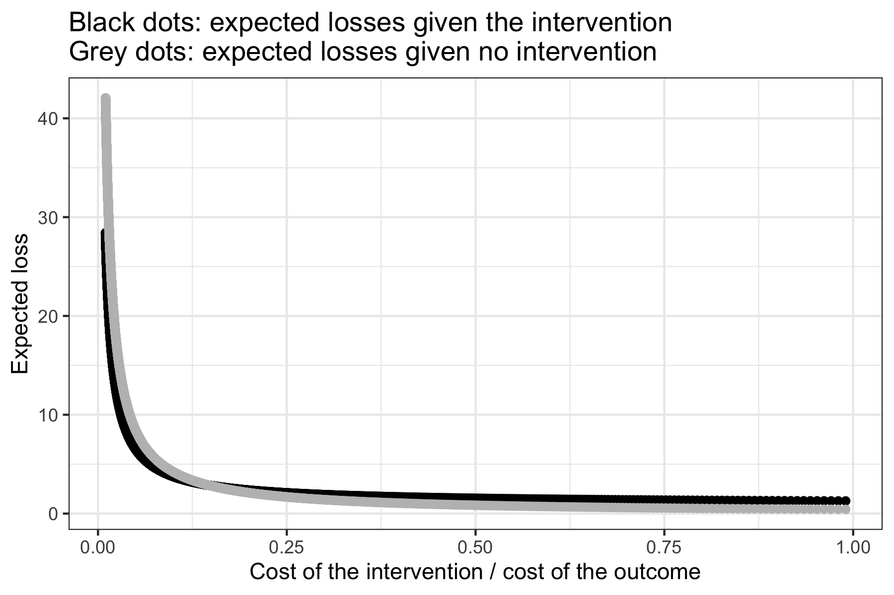

Top Page | Research Projects | Publications and Working Papers | Statistical Programs | Data Science Blog
The R package "bayesdtm" implements Bayesian decision-theoretic models to compute expected losses under an intervention (in causal inference senses) and those under no intervention (i.e., the status quo), across different ratios of the cost of the intervention to the cost of an undesirable outcome. The package currently has functions for outputs from Bayesian logistic regression and Bayesian linear probability models, where the causal binary loss function model, introduced in Suzuki (2022), is implemented. In this vignette, I explain how to install the package and how to use it. For a theoretical rationale for using Bayesian decision-theoretic models such as the causal binary loss function model, please refer to Suzuki (2022).
First, let's install the package. To do so, you need to have the devtools package (Wickham, Hester, and Chang 2020) installed.
# Install the devtools package to install a package from GitHub
install.packages("devtools")
# Install the ccdfpost package from GitHub
devtools::install_github("AkisatoSuzuki/bayesdtm")
Now, let's generate some hypothetical data via simulation, to be used to produce posterior samples via Bayesian regression. I choose arbitrary values for all parameters.
n <- 1000 x <- c(rep(0, n/2), rep(1, n/2)) set.seed(2) y <- rbinom(n, 1, 1/(1+exp(-(log(1) + rnorm(1, mean = log(0.5), sd = 0.1)*x) ) ) ) d <- data.frame(x, y)
Now, let's estimate the effect of x on y using Bayesian logistic regression. I do so via the rstanarm package (Goodrich et al. 2020), which works in a very similar way to the standard glm function. You can find more details on rstanarm at https://mc-stan.org/rstanarm. For simplicity, I use the default priors here. One caveat in the setup of logistic regression is that the binary dependent variable must be coded such that the value of 1 means an undesirable outcome and the value of 0 means a desirable outcome.
# install.packages("rstanarm")
library("rstanarm")
# Bayesian logistic regression with default priors
m <- stan_glm(y ~ x, data = d, family = binomial(link = "logit"),
iter = 10000, chains = 4, cores = 4, warmup = 1000, seed=3)
# Extract posterior samples as a data frame
postmat <- as.data.frame(m)
# Extract a vector of posterior samples for x
posterior <- postmat$x
# Compute the mean of the posterior samples of the baseline log odds
pi <- mean(postmat$"(Intercept)")
Once you have a vector of posterior samples for the causal variable of interest and the baseline log odds computed (here, I use the mean of the posterior samples of the constant), you can use the loss_logit function to compute expected losses, as follows.
library(bayesdtm) results <- loss_logit(posterior = posterior, pi = pi) # Display a table with the expected losses under an intervention, # those under no intervention, and the different ratios of the cost # of the intervention to the cost of the undesirable outcome. results[[1]] # Plot these results results[[2]]
The example here produces the following plot.

In the above example, there is only one regressor. What if there are more than one regressor? In such a case, you use the posterior samples of the causal variable of interest, while adding the mean posterior of the other regressors times (the fixed values of) these regressors to the posterior mean of the baseline log odds (if the observed values of the other regressors are kept as such, the loss_logit function computes the mean of the predicted probabilities and then uses it in the loss function). It is the same logic as when you estimate the fitted values of an outcome across different values of the causal variable. The below is an example, where x is the causal variable of interest and z is another regressor. I also specify md = log(0.8), which means the practically relevant effect size is defined as equal to or smaller than an odds ratio of 0.8 (I use the log of the odds ratio because the input for this parameter must be on the log odds ratio scale).
x <- c(rep(0, n/2), rep(1, n/2))
set.seed(2)
z <- rnorm(n, mean = -4, sd = 10)
set.seed(3)
y <- rbinom(n, 1, 1/(1+exp(-(log(1) + rnorm(1, mean = log(0.5), sd = 0.1)*x
+ rnorm(1, mean = log(1.25), sd = 0.1)*z) ) )
)
d <- data.frame(x, z, y)
# Bayesian logistic regression with default priors
m <- stan_glm(y ~ x + z, data = d, family = binomial(link = "logit"),
iter = 10000, chains = 4, cores = 4, warmup = 1000, seed=4)
# Extract posterior samples as a data frame
postmat <- as.data.frame(m)
# Extract a vector of posterior samples for x
posterior <- postmat$x
# Add the mean of posterior samples for z times the vector z,
# to the mean of the posterior samples of the baseline log odds
pi <- mean(postmat$"(Intercept)") + mean(postmat$z) * z
# Use the loss_logit function with specifying the minimum desired
# effect size as an odds ratio of 0.8
results <- loss_logit(posterior = posterior, pi = pi, md = log(0.8))
results[[1]]
results[[2]]
The resulting plot is as follows.

References
Goodrich, Ben, Jonah Gabry, Imad Ali, and Sam Brilleman. 2020. "Rstanarm: Bayesian Applied Regression Modeling via Stan." https://mc-stan.org/rstanarm.
Suzuki, Akisato. 2022. "Policy Implications of Statistical Estimates: A General Bayesian Decision-Theoretic Model for Binary Outcomes." Statistics and Public Policy, https://doi.org/10.1080/2330443X.2022.2050328.
Wickham, Hadley, Jim Hester, and Winston Chang. 2020. "devtools: Tools to Make Developing R Packages Easier." R package version 2.3.0. https://CRAN.R-project.org/package=devtools.